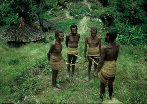
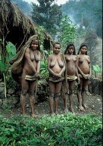
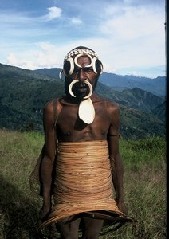
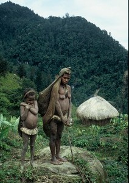
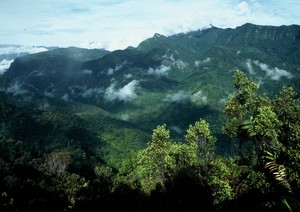
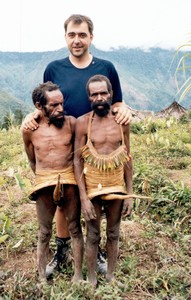
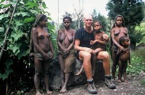
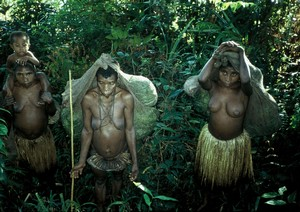
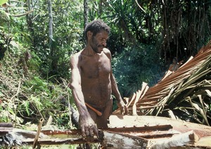
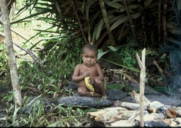

Navigation
 ČESKÁ verze
ČESKÁ verze- The best of New Guinea
- PNG & West Papua
- Today cannibals
- First Contact expedition
- Tribe Expedition
- ITINERARIES AND SCHEDULE
- Carstensz Pyramid - Top of Papua
- Korowai & Kombai tribe – Papua Tree people tribes
- Korowai Batu & Kopkaga - tree people
- Asmat tribe – the Papuan cannibals
- Mamberamo river of West Papua
- Dani tribe in Baliem Valley
- Lani tribe in Baliem Valley
- Wamena as a first contact place on West Papua highlands
- Papua New Guinea
- Goroka Show & Mt. Hagen Show
- Asaro Mudman
- Huli tribe – the wig-men
- Why to go with us
- The films from our expeditions
- More photos
- References
- Papua Postcards
- Papua Internet
- Links
- Contact us
- Download
Yali Tribe – Papua pygmey cannibals

Papua Yali tribe – traditional man dress Photo©JahodaPetr.com (Papua guide)

Papua Yali tribe – women dress Photo©JahodaPetr.com (Papua guide)
Yali tribe is most likely the smallest of Papuan nations. I wrote “likely” because I am convinced that not all the nations living in New Guinea (including Irian Jaya), have yet been discovered.
Yalis were discovered no sooner than in 1961. They make their homes in the highlands; this is what inhabited areas of mountains are called in Papua. Inland, and especially areas near the mountains, are the least accessible territories which were thus discovered most recently.
Papua – Yali tribe – story of cannibalism

Papua Yali tribe – mountain Yali Photo©JahodaPetr.com (Papua guide)
Papuan Yali tribe belonged to the most dreaded cannibals of the western part of the New Guinea Island (Irian Jaya). They are ranked among the pygmy group of nations (dwarf nations), and more precisely among pygmy negrits.

Papua Yali tribe – mountain Yali Photo©JahodaPetr.com (Papua guide)
Despite the fact that mature men are scarcely taller than 150 cm, and that they have never been head-hunters, they are respected by their enemies. The fear reached such a degree that the Yalis couldn’t visit each other. As a result, in every valley the language developed in a different way. The difference was so striking that the Yali tribe members themselves claim that the valleys don’t understand each other.
The reason why, the group of cannibals called Papuan Yalis were particularly dreaded, was because they totally destroyed their enemies. They did not only eat the body, but they allegedly grinded the bones to dust, which was then thrown into the valley. They did all this to prevent the victim from ever returning. People from the neighboring villages were not only killed for revenge, sometimes just for meat…
Papua Yali – trekking in Highland

Papua mountain Yali tribe lives in very steep, but very beautiful highlands in west Papua. Photo©JahodaPetr.com (Papua guide)

Papua pygmey – Mountain Yali Photo©JahodaPetr.com (Papua guide)
Papuan mountain Yali tribe members dwell some 2500 – 2000 m above the sea level. There are two ways to reach them. First, there is a very difficult but also beautiful trek. This several day long trek starts at Wamena (18000 m). It traverses the Jayawijaya mountain range, and a mountain saddle situated at 4000 m above the sea level, not far from the summit of Mount Elit. The trek is so strenuous because the Papua mountains are very rugged and steep.
You won’t avoid trekking, even if you decide for the second alternative – a plane. To see the Yalis you flew in to see, you will have to follow them to their villages, which lie in the mountains. If you want to see also the lowland Yali tribe members, who live 1500 – 1000 m above the sea level, you’ll have to extend your trek by several days. You won’t regret though. The fantastic sceneries, which will be offered as a reward for this effort, will remain your lifelong memories. Take my word on that.
Papua mountain Yali tribe – culture

Petr Jahoda, Papua guide, with Yali women Photo©Miroslav Lapčík
The Papuan mountain Yali tribe members live in round huts build from cut planks and roofs made of pandan leaves. Women and men live separately. Women have their own houses, and men live in community houses (honai).
Men wear traditional big “rattan” skirts and kotekas. The skirts are composed of large number of separate approximately 5 mm wide strips of rattan, which are coiled around the body like a tire. These “tires” are connected on several places. The result is a kind of skirt. This skirt covers the body of Yalis from breasts down to knees. The front of this skirt is supported by a koteka, a “penis tube” made of wooden fruit of a bottle plant.
.JPG)
Papua Mountain Yali children carrying pandanus from the lowland Photo©JahodaPetr.com (Papua guide)
Yali women wear traditional small and short skirts made of grass. Their breasts are left bare, similarly as in the rest of Papuan tribes. The skirts merely cover their genitals. They consist of two parts – the front one and the rear one. A small string encircles their waists, and the rear part of the skirt is usually worn beneath their butts. A part of their dress is also a bag woven from threads made of orchid fibers. The bag, full or empty, covers the women’s back and butt. Often it ends down at their knees. The skirt consists of four layers. The first layer is given to girls, when they reach approximately four years of age. One layer is added every four years. As soon as the number of layers reaches four, it means that the girl is mature and she can marry.
Papuan lowland Yali – culture

Papua Yali tribe – lowland women dress Photo©JahodaPetr.com (Papua guide)
Papuan lowland Yali tribe members are significantly different from highland Yali. Men don’t wear rattan skirts, only kotekas. Women don’t wear small four-layer skirts, but long skirts made of grass. It could be hence said that they are not as interesting as the mountain Yali, but the opposite is true. Lowland Yali almost live in isolation and are thus affected by outside influence only to a very small degree. It is fantastic to visit both cultures during one trek. A descent from the mountains to the lowland can be a very pleasant experience, considering that our diet changes as well. The diet of sweet potatoes might change to buamera (pandan fruit) or even sago. All in all, one should explore as many things during a trek as possible, don’t you think?

Papua Yali tribe – lowland Yali man working with sago Photo©JahodaPetr.com (Papua guide)

Papua Yali tribe – lowland Yali child with a banana Photo©JahodaPetr.com (Papua guide)
Yali tribe – itineraries and schedule
Yali tribe expedition itineraries and schedule